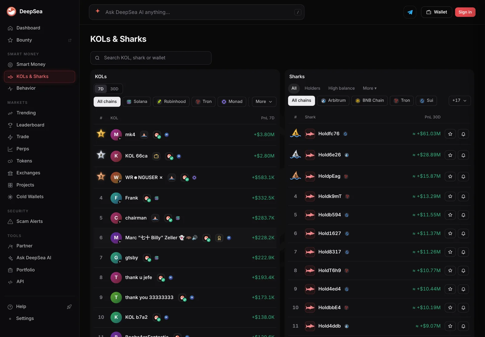

WLFI hit a record low as 4 sharks sold $12.1 million and bought $9.8 million in a day
DeepSea's 24-hour table shows heavy two-way shark trading in World Liberty Financial's token, equal to about two-thirds of its CoinGecko volume. The token is down 87.8% from its high.
Key points
- Four shark wallets sold $12,128,738 of WLFI and bought $9,757,412 on Ethereum in 10 trades, in DeepSea's 24-hour table built at 12:35 a.m. ET on November 25.
- CoinGecko shows WLFI hit an all-time low of $0.03991 at 9:05 p.m. ET on November 24. It traded at $0.0402 at 12:46 a.m. ET, down 12.4% in 7 days.
- The sharks' $21.9 million of trading compares with $33.4 million of 24-hour WLFI volume on CoinGecko. One shark also sold $4.0 million of USD1, World Liberty's dollar stablecoin, on Solana.
 What DeepSea's data shows
What DeepSea's data shows
DeepSea's 24-hour flow table, built at 12:35 a.m. ET on November 25, has a WLFI line on Ethereum: 4 shark wallets, $12,128,738 sold and $9,757,412 bought, in 10 trades. That is a net $2.37 million sold. The token address in the table, 0xda5e...cbef6, matches the Ethereum contract CoinGecko lists for WLFI.
The same table shows one shark selling $4,006,838 of USD1 on Solana in 26 trades, with nothing bought. USD1 is World Liberty's dollar stablecoin, and the token address in the table matches the Solana address CoinGecko lists for it. WLFI did not appear in the table for the most recent hour.

Data: DeepSea (desea.io), checked November 25, 2026, 12:35 a.m. ET.
A record low
WLFI is World Liberty Financial's token. The company's documentation says its sole purpose is to take part in governance, meaning votes on the project. World Liberty's flagship product is USD1, a dollar stablecoin that BitGo issues and holds in custody. New to stablecoins? Read how they work. CoinGecko shows it set an all-time low of $0.03991 at 9:05 p.m. ET on November 24. At 12:46 a.m. ET on November 25 it was at $0.0402, down 0.9% in 24 hours, 12.4% in 7 days and 23.9% in 30 days.
The token's high was $0.3313 on September 1, 2025, so it now sits 87.8% below that peak. CoinGecko puts its market value at $1.27 billion, with 31.66 billion tokens in circulation out of a total supply of 96.62 billion.
WLFI price change to November 25, 2026
percent
Source: CoinGecko, read November 25, 2026, 12:46 a.m. ET
How big the shark trading was
The sharks' buys and sells add up to $21.9 million. CoinGecko shows $33.4 million of WLFI traded in the past 24 hours across the exchanges it tracks. The two numbers are not measured the same way: DeepSea counts on-chain swaps by tagged wallets, and CoinGecko counts mostly exchange trades. Still, for scale, the shark trading equals about two-thirds of that volume.
That is a lot of trading for four wallets in one day. Most of it went both ways, so the four wallets did not dump $12 million on the market in one direction. The net selling was $2.37 million. The table does not show which wallet traded how much, or why.

LC Insight analysis
This section is our reading of the facts above, not a statement of fact.
- We think the two-way pattern matters more than the gross number. Four wallets traded $21.9 million for a net sale of only $2.37 million, which looks more like active trading than a single exit.
- A new all-time low with net shark selling adds to a 23.9% drop over 30 days. We read that as continued weakness in the token, not a sign of where it goes next.
- The USD1 sale on Solana is a dollar token changing hands, so it says little about the stablecoin's peg on its own.
What's next
- Whether WLFI sets another low under $0.03991 on CoinGecko.
- Whether the WLFI line in DeepSea's table turns into net buying.
- Further USD1 moves by the Solana shark that sold $4.0 million.
Disclaimer. This article is based on public information and the sources listed below as of the update time shown. It is for information only and is not investment, legal or tax advice. Figures may change as companies and authorities publish new data.
Sources
- DeepSea, 24-hour shark flow table (built November 25, 2026, 12:35 a.m. ET)
- CoinGecko, World Liberty Financial (WLFI) price, volume and all-time low (read November 25, 2026, 12:46 a.m. ET)
- World Liberty Financial docs, WLFI governance
- World Liberty Financial docs, What is USD1?
- CoinGecko, WLFI coin data with contract addresses and supply (read November 25, 2026, 12:46 a.m. ET)